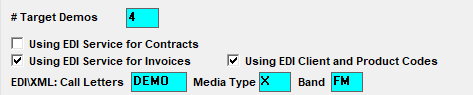
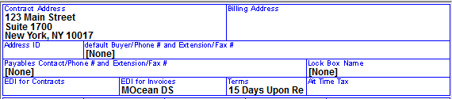
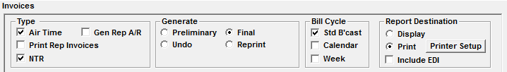

Electronic Invoices
The Counterpoint Traffic system has the ability to produce an electronic data file (EDI) for final and reprint invoices. Counterpoint supports 7 EDI services provided by 6 vendors, which all conform to the 4A’s (American Association of Advertising Agencies) standard format.
The EDI Vendors and systems are:
- MediaOcean DS (previously Donovan)
- MediaOcean OX (previously Mediavest)
- Katz
- Grey Advertising
- Spot Data
- Radio Invoices Inc. (owned by, and sometimes referred to as, Strata)
- Warren Lamb
If your network uses a vendor not listed, please provide support@counterpoint.net with the following:
- The name of the vendor
- An IT contact at the vendor
- A formal specification of the EDI format
- A sample output file
What it Does
Electronic invoicing allows the broadcaster to send a data file to the agency, which contains all information found on the paper invoice. This file is loaded into the agency’s computer, saving data entry, increasing accuracy, and resulting in timelier payment.
How it Works
When an order is finalized, the EDI vendor enters the order information into a database. When the EDI vendor receives the invoice file from the network, they upload the file into their database.
The database compares the order with the invoice, notes discrepancies, and decides whether to “Pay” or “Hold” payment of the invoice. When “Pay” is selected, a check is printed and sent to the broadcaster. If “Hold” is chosen, the EDI Vendor contacts the network to explain the discrepancy.
For orders that are cash in advance, the EDI vendor produces a check without an invoice.
Setup
Contact EDI Vendor
Send the EDI Vendor the EDI Call Letters as defined in Site Options -> Expt (Export). The vendor will provide a list of agency/advertiser codes that must be entered in the Lists -> Agency/Advertiser screens.
You will require a Key Code from support@counterpoint.net to activate this feature.
Site Options Setup
Site Options -> Export Tab

- Using EDI Service for Contracts: This currently is not used
- Using EDI Service for Invoices: Select this option if using a service to generate and send electronic invoices. You will need to indicate the EDI service in the agency screen
- Using EDI Client and Product Codes: If the option “Using EDI service for invoices” is checked on, then the setting “Using EDI client and product codes” becomes enabled. When “Using EDI client and product codes” is checked on, the EDI client and product code fields will appear in the contract number field on the Proposals and Orders screen, so that they can be entered there, and output on the EDI invoice. (Version 7.1 and above.)
- EDI Call Letters, Media Type, Band: If you are using electronic invoicing or are using Proposal XML:
- Call Letters come from the service provider
- Media Type is “X” for a radio network
- If a different Media Type is required, the Type defined in Lists -> EDI Media Type will override the type defined in Site Options.
- Band is “X” for a radio network
Site Options -> Invoices Tab
- Check Yes for “All Vehicles on Same Invoice”.
- Answer “Print Final EDI Invoices”: When checked, by default, the “Include EDI” checkbox on the invoice screen will be checked on so that invoices for agencies that are set to use the EDI system will also get regular invoices created for them.
- Bill Spots X-Mid in Aired Month: If checked, then spots that cross midnight on the last day of the standard billing month will print on the invoice in the order month, but will actually bill in the next month where they truly aired. If unchecked then the spots will be shown and billed in the ordered month
- Combine air time and NTR: when this is checked on, and an invoice contains air time and NTR, the EDI invoice will not be generated for that invoice, as EDI is not compatible with NTR.
Lists -> EDI Services
The EDI Screen is where you define the companies that will be delivering the Electronic Invoices.
The EDI Vendors and systems are:
- MediaOcean DS (previously Donovan)
- MediaOcean OX (previously Mediavest)
- Katz
- Grey Advertising
- Spot Data
- Radio Invoices Inc. (owned by, and sometimes referred to as, Strata)
- Warren Lamb
Enter all pertinent information. The Media Type for Radio Networks is “X,” and is defined in Site Options -> Export. If however, a different Media Type is required, the Type defined in Lists -> EDI Services “Media Type” field will override what is defined in Site Options.
Advertiser/Agency Setup
Enter the unique Advertiser/Agency code for each Direct Advertiser or Agency where an EDI is required.
Define the Agency Advertiser Code or Station Agency Code that your EDI vendor gave you.
Select the EDI for Invoices vendor: Donovan, Katz, MediaBank, RadioInvoices.com, Spot Data, WarrenLamb, etc.
Direct Advertiser
In Lists -> Advertisers, define the Agency Advertiser Code provided by the EDI vendor.
Select the EDI Vendor, for example MOcean, Katz, MediaBank, Radioinvoices.com, etc.

Agency
Define the Station Agency Code the EDI vendor gave you.
Select the EDI Vendor from the EDI for Invoices section. For example, MOcean, Katz, MediaBank, Radioinvoices.com, etc.
Export Subfolder Setup
Create an export subfolder for your EDI vendors in which the invoice file will be stored for the agencies and direct advertisers that are defined to receive EDI files, for example:
CSI\PROD\EXPORT\MOcean, using the service name. If this subfolder is not created, the first time the EDI invoices are generated for that service, they will be created automatically.
Creating the EDI File
The electronic invoice file is automatically created when you generate final or reprint invoices.

The file will be stored to the CSI\PROD\EXPORT\Vendor subfolder. From that folder, you can email or upload the file to the EDI Vendor’s website.
The file name is IyymmddA.EDI:
- The ”I” stands for “invoices”
- yymmdd is the year, month, date on which the invoices were generated
- The “A” is a sequence code, in case multiple invoice runs are produced on the same day
- The first final run has code A, the second final invoices, code B, etc.
- If reprint invoices are generated, the file created is REPRT.EDI
- Multiple reprints replace previous reprints, the file name does not change
EDI Troubleshooting
When uploading the file into the DDS website, you may receive errors if data is missing. General upload errors may be:
- Agency ID is missing
- Solution: Enter the Vendor IDB number, generate reprint invoices, upload the reprint file
- Station WDMO-X-X is unknown. Please register your station
- Solution: The SA needs to register the station/call letters in the Vendor Invoice Management system (IM) before loading the invoices
- The record ## was found out of place (x occurrences)
- Solution: If you received any of the other error messages, all records for that invoice will be out of place. Generate reprint invoices, upload the reprint file
- Traffic code #### for (agency name) is linked to a buying organization that does not accept media X
- Solution: The assigned code was incorrect, your vendor can tell you the correct code
- Unable to locate file
- Check the spelling of the EDI vendor in the List options on Counterpoint
- The EDI vendor must match the name that is created for the subfolder under export, i.e. Donovan will not locate the MOcean folder.